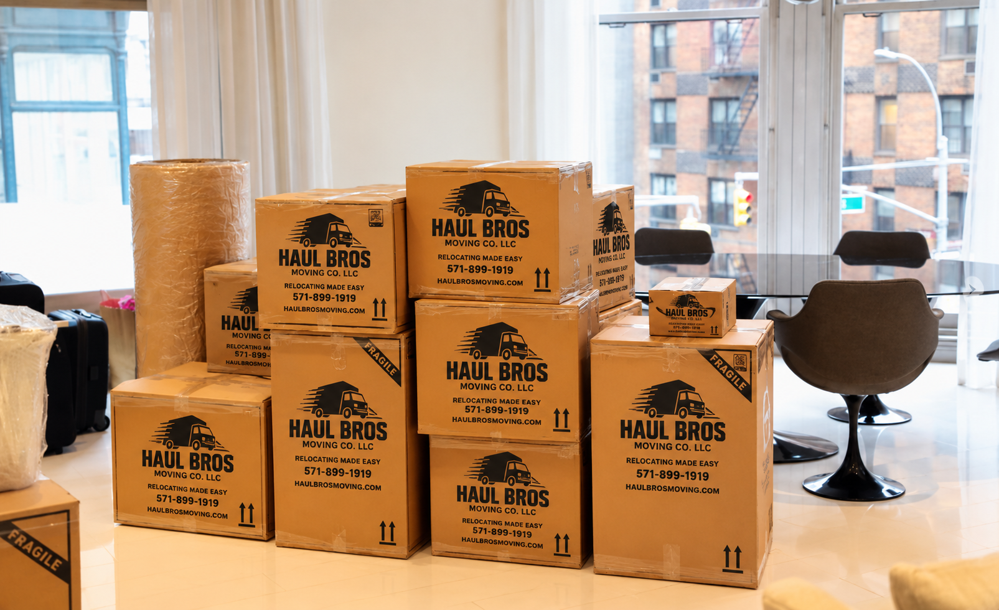
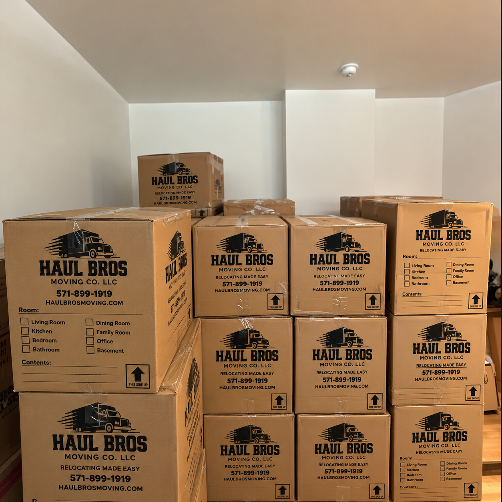

Moving into a new home is exciting, but packing everything you own can quickly become one of the most time-consuming parts of relocating.
From carefully wrapping dishes and glassware to packing bedrooms, closets, home offices, and kitchen cabinets, preparing a household for moving requires organization, time, and proper materials.
For families, busy professionals, seniors, and customers preparing for long-distance moves, hiring professional packers can make the moving process easier.
But how much do professional packing services cost in Northern Virginia? What do packing companies actually do? Is hiring professional packers worth the additional expense?
At Haul Bros Moving Co LLC, we provide packing and unpacking assistance for qualifying residential and commercial moves throughout Woodbridge, Fairfax, Springfield, Chantilly, Manassas, Stafford, Alexandria, Arlington, and surrounding Northern Virginia communities.
This comprehensive guide explains everything you should know before hiring professional packing services.
Quick Answer: Are Professional Packing Services Worth It?
Professional packing services can be worth the investment if you have limited time, a large household, fragile belongings, or need help preparing for a move.
Professional packers can assist with:
- Packing kitchenware, dishes, and glassware.
- Wrapping fragile household belongings.
- Packing bedrooms and closets.
- Preparing books, decorations, and household items.
- Organizing and labeling moving boxes.
- Packing office supplies and equipment.
- Preparing approved items for storage.
- Unpacking and organizing belongings at the destination.
The main benefits are convenience, reduced physical work, and more consistent packing preparation.
Haul Bros Moving Co LLC offers full and partial packing services in Northern Virginia, with estimates based on the amount of packing required, labor, and materials.
Call (571) 899-1919 or visit www.haulbrosmoving.com to request a free packing and moving estimate.
1. What Are Professional Packing Services?
Professional packing services involve hiring trained moving personnel to prepare household or business belongings for transportation.
Instead of spending days or weeks packing everything yourself, you can hire a team to assist with some or all of the process.
The scope depends on the service package you select.
Full-Service Packing
Full-service packing generally involves preparing most eligible household belongings for transportation.
This may include:
- Kitchen dishes and cookware.
- Living room decorations.
- Books and personal belongings.
- Bedroom contents.
- Clothing and linens.
- Home office supplies.
- Small household items.
- Approved fragile belongings.
Full-service packing can be especially useful for larger homes and customers with limited time.
Partial Packing
Partial packing allows you to select the rooms or items you want professional assistance with.
For example, you may pack your bedrooms and clothing yourself while hiring professionals to handle the kitchen, glassware, and fragile decorations.
This approach can help customers manage their moving budgets.
Fragile-Item Packing
Some belongings require additional care because of their shape, materials, or vulnerability to damage.
Examples include:
- Glassware.
- Mirrors.
- Artwork.
- Porcelain.
- Lamps.
- Decorative items.
- Sensitive electronics.
Specialty items may require custom cartons, additional padding, or other protective arrangements.
Unpacking Services
Unpacking assistance can help customers settle into their new home.
Depending on the agreed scope, unpacking may involve opening cartons, placing belongings on accessible surfaces or in designated areas, and removing empty packing materials.
Detailed home organization and specialty installation should be discussed separately.
2. How Much Do Professional Packing Services Cost in Northern Virginia?
Packing costs depend on the amount of belongings, number of packers, time required, and packing supplies.
Unlike a simple moving estimate, packing expenses are influenced heavily by the number of cabinets, closets, shelves, and loose household items.
What Affects Packing Costs?
Home Size
A studio apartment typically contains fewer belongings than a four-bedroom home.
Number of Boxes
More belongings generally require additional boxes, protective materials, and labor.
Fragile Items
Glassware, artwork, and delicate decorations can take longer to prepare.
Packing Materials
Boxes, packing paper, tape, bubble cushioning, and specialty cartons can affect the total.
Number of Packers
A larger packing crew may complete the work faster, depending on the inventory.
Service Level
Packing one kitchen is different from packing an entire household.
Illustrative Packing Labor Scenarios
The following examples use Haul Bros' standard two-mover labor-only rate as a mathematical reference, not as a guaranteed packing-service quote.
| Example Packing Time | Labor Calculation |
|---|---|
| First 2 hours | $295 |
| 3 hours total | $420 |
| 4 hours total | $545 |
| 5 hours total | $670 |
| 6 hours total | $795 |
These calculations exclude packing supplies, any specialized packing charges, and other services. The actual packing labor rate and service minimum must be confirmed in your written quote.
How Much Do Packing Materials Cost?
Material costs vary based on the type and quantity needed.
Common supplies include:
- Small, medium, and large moving boxes.
- Heavy-duty boxes.
- Dish-pack cartons.
- Wardrobe boxes.
- Packing paper.
- Tape.
- Bubble cushioning.
- Mattress bags.
- Protective wrapping.
For an accurate estimate, provide photos or a detailed inventory of the rooms you need packed.
At Haul Bros Moving Co LLC, we can prepare a packing estimate based on your specific household rather than assuming every home requires the same amount of supplies.
3. Full Packing vs. Partial Packing: Which Is Better?
Not every customer needs full-service packing.
The best choice depends on your schedule, budget, and the amount of work you want to handle yourself.
| Feature | Full Packing | Partial Packing |
|---|---|---|
| Most household items packed by professionals | Yes | No |
| Customer packs selected items | Optional | Yes |
| Professional kitchen packing | Available | Available |
| Professional fragile-item packing | Available | Available |
| Labor requirement | Generally higher | Generally lower |
| Suitable for limited preparation time | Often | Sometimes |
| Budget flexibility | Less | More |
When Full Packing Makes Sense
Full packing may be suitable when:
- You're moving a large household.
- Your moving date is approaching quickly.
- You have limited time because of work or family responsibilities.
- You need help preparing multiple rooms.
- You prefer professional assistance with most eligible belongings.
When Partial Packing Makes Sense
Partial packing may be suitable when:
- You want to control costs.
- You've already packed several rooms.
- You need help mainly with fragile items.
- Your kitchen requires extra attention.
- You want assistance with specific furniture or household contents.
For many Northern Virginia customers, partial packing offers a practical balance between convenience and affordability.
4. Why Hiring Professional Packers Can Save Time
Packing a home involves much more than placing belongings inside boxes.
You must sort items, select suitable cartons, protect fragile objects, label containers, and prepare everything for transportation.
For a larger household, this can require substantial preparation over multiple days.
Professional packers can help by dividing the work between crew members and following a coordinated packing plan.
Example: Packing a Three-Bedroom Townhouse in Woodbridge
Consider a family moving from a three-bedroom townhouse in Dale City to a new home in Lake Ridge.
The household includes:
- Three bedrooms.
- Living room furniture.
- Kitchenware.
- Home office supplies.
- Clothing and linens.
- Decorations.
- Garage storage.
If the family packs everything themselves, they may need to complete the work across several evenings and weekends.
With professional assistance, selected rooms may be prepared in a more concentrated work period.
The actual time depends on inventory, the number of packers, and the level of organization before work begins.
5. Professional Kitchen Packing Services
The kitchen is often one of the most demanding rooms to pack.
It contains many small, fragile, and irregularly shaped belongings.
Common items include:
- Plates.
- Bowls.
- Drinking glasses.
- Coffee mugs.
- Pots and pans.
- Small appliances.
- Utensils.
- Food storage containers.
- Decorative glassware.
How to Prepare Kitchen Items for Moving
Separate Fragile Items
Glassware and dishes should be packed with appropriate cushioning.
Use Suitable Boxes
Heavy or fragile items may require stronger cartons and careful weight distribution.
Avoid Overpacking
Boxes should remain manageable and structurally sound.
Label Fragile Cartons
Clearly identify fragile contents and the destination room.
Separate Items Movers Cannot Transport
Hazardous materials, perishable food, and certain other items may be restricted.
Can Movers Pack Dishes and Glassware?
Yes. Haul Bros Moving Co LLC offers packing assistance for eligible kitchen belongings, including dishes and glassware.
Customers should identify particularly valuable or delicate items before packing begins.

6. Packing Services for Apartments in Northern Virginia
Apartment moving presents unique challenges.
Residents may have limited storage space, elevator reservations, loading dock rules, and strict moving schedules.
Professional packing assistance can help customers prepare their belongings before the moving crew arrives.
Apartment Packing in Arlington, VA
Apartment residents may need to coordinate packing with building access and elevator reservations.
Apartment Packing in Alexandria, VA
Packing ahead of the scheduled move can help reduce delays associated with hallways, parking, and loading restrictions.
Apartment Packing in Tysons, VA
High-rise buildings may have designated moving hours and service elevator requirements.
Apartment Packing in Reston and Herndon, VA
Customers moving between apartments can request assistance with kitchens, bedrooms, fragile belongings, and household items.
Apartment Packing in Woodbridge, VA
Haul Bros serves customers moving from apartment communities throughout Woodbridge, including areas near Potomac Mills, Route 1, and surrounding neighborhoods.
7. Packing Services for Townhouses and Single-Family Homes
Larger homes may require a more detailed packing plan because belongings are spread across multiple rooms and floors.
Townhouse Packing
Townhouses commonly contain:
- Multiple bedrooms.
- Second-floor kitchens and living rooms.
- Basement storage.
- Home offices.
- Garage contents.
Packing boxes by destination floor can make unloading and unpacking more organized.
Single-Family Home Packing
Single-family homes may include additional spaces such as:
- Attics.
- Basements.
- Garages.
- Storage rooms.
- Outdoor storage areas.
These spaces should be included in the packing inventory.
Packing for a Four-Bedroom Home
For a larger household, Haul Bros may recommend a pre-move inventory review to estimate the number of boxes, packing materials, and crew hours needed.
The goal is to develop a packing plan that matches the actual volume of belongings.
8. Packing Fragile and Valuable Household Items
Fragile belongings require special attention during preparation and transportation.
Mirrors
Mirrors should be protected using suitable materials and cartons designed for their dimensions.
Artwork
Framed artwork may require corner protection, cushioning, and appropriately sized boxes.
Glassware
Glassware should be individually protected where necessary and packed to limit movement.
Televisions
Original manufacturer packaging can be useful when available. Otherwise, a suitable television carton and protective materials may be needed.
Electronics
Customers should back up important data, disconnect equipment, and secure loose accessories.
Antiques and Collectibles
High-value or unusually delicate items may require specialized packing or custom crating.
Important: Standard packing services do not automatically include custom crating, specialty insurance, or guaranteed protection against all damage. Discuss high-value items and applicable valuation coverage before booking.

9. What Packing Supplies Do Professional Movers Use?
Professional packing projects may require several types of supplies.
Moving Boxes
Different box sizes help distribute weight and protect household belongings.
Packing Paper
Packing paper can help cushion dishes and other fragile items.
Bubble Cushioning
Protective cushioning may be used for appropriate fragile items.
Packing Tape
Quality tape helps secure cartons.
Wardrobe Boxes
Wardrobe cartons can accommodate certain hanging clothing items.
Dish-Pack Boxes
These cartons are designed for fragile kitchenware.
Mattress Protection
Mattress bags and protective wrapping can help keep mattresses cleaner during transportation.
Specialty Cartons
Mirrors, televisions, and artwork may require appropriately sized protective packaging.
Are Packing Supplies Included in the Price?
Packing material charges depend on the selected service package and written estimate.
At Haul Bros, customers should request a breakdown of packing labor and materials so they understand the total cost before booking.
10. How to Save Money on Professional Packing Services
You can use professional packing assistance without necessarily paying to pack every item in your home.
Pack Clothing Yourself
If you have time, pack clothing, shoes, and nonfragile personal belongings before the crew arrives.
Hire Packers for the Kitchen
Kitchen packing can be time-consuming because of dishes, glassware, and fragile items.
Declutter Before Packing
Avoid paying to pack and transport items you no longer need.
Separate Personal Valuables
Keep essential documents, medications, jewelry, and irreplaceable personal items under your own control.
Organize Rooms in Advance
Group belongings by category and identify what should be packed, donated, or left behind.
Request an Accurate Estimate
Provide the moving company with photos and a detailed description of the rooms requiring packing.
Combine Packing and Moving Services
Ask whether scheduling packing and transportation together is appropriate for your move.
A coordinated plan can simplify scheduling, although it does not automatically guarantee a lower total price.
11. Professional Packing Services Throughout Northern Virginia
Haul Bros Moving Co LLC provides packing and unpacking assistance for qualifying moves throughout its Northern Virginia service area.
Woodbridge, VA
We assist customers with packing for apartments, townhouses, single-family homes, and storage-related moves.
Dale City, VA
Our packing services help residents prepare for local relocations and larger household moves.
Lake Ridge, VA
Customers can request kitchen packing, fragile-item packing, and other household packing assistance.
Fairfax, VA
We provide packing support for residential and qualifying commercial moves.
Springfield, VA
Our team assists customers preparing for apartment, townhouse, and single-family home relocations.
Burke, VA
We offer packing assistance for eligible residential moving projects.
Chantilly, VA
Customers can request full or partial packing services for qualifying moves.
Centreville, VA
We assist with packing household belongings and preparing moving cartons.
Manassas, VA
Our services include packing assistance for local residential moves and qualifying storage projects.
Stafford, VA
We help customers prepare for residential relocations, including larger household moves.
Alexandria and Arlington, VA
Packing assistance is available for eligible apartment, condominium, townhouse, and residential relocations.
Additional Service Areas
We also serve qualifying moves in Lorton, Dumfries, Triangle, Vienna, Annandale, Reston, Herndon, Fredericksburg, and surrounding Northern Virginia communities.
Service availability depends on scheduling and project requirements.
12. How to Choose a Reliable Packing Company in Northern Virginia
Before hiring professional packers, ask the following questions.
What exactly is included in the packing service?
Confirm which rooms and belongings the crew will pack.
Are packing materials included?
Ask whether boxes, paper, tape, and specialty cartons are charged separately.
How many packers will be assigned?
Crew size should reflect the inventory and available preparation time.
Can I choose partial packing?
Not every household requires full packing.
Do you pack fragile items?
Explain any unusually delicate belongings before booking.
What items will you not pack?
Moving companies may restrict hazardous materials, perishables, and other items.
What happens if something is damaged?
Review applicable valuation and claims provisions.
Will boxes be labeled?
Clear labeling can help organize unloading and unpacking.
Can packing be scheduled before moving day?
Ask whether a separate packing day would be more practical.
Can I receive a written estimate?
Request clear pricing for labor, materials, and any specialty services.
13. Frequently Asked Questions About Packing Services in Northern Virginia
How much do professional packing services cost in Northern Virginia?
Costs depend on the amount of belongings, labor hours, materials, and service level. Haul Bros provides estimates based on the specific rooms and items requiring packing.
Is it worth paying movers to pack your belongings?
It can be worthwhile for customers with limited time, fragile belongings, larger homes, or physical limitations. Partial packing is another option for managing costs.
Can I hire professional packers without hiring movers?
Packing-only arrangements may be available depending on the project and scheduling. Contact Haul Bros to confirm the requested service.
Do professional packers bring their own boxes?
Packing companies may supply boxes and protective materials. Confirm the materials and charges in your estimate.
How long does it take to pack a three-bedroom house?
The time varies with inventory, preparation, crew size, and service scope. A detailed assessment is needed for a useful estimate.
Can professional movers pack an entire house in one day?
Some homes can be packed in a day with an appropriate crew, while larger or heavily furnished properties may require more time.
Can I hire movers just to pack my kitchen?
Yes. Haul Bros offers partial packing assistance for qualifying projects, including kitchen packing.
Do packers handle fragile glassware?
Yes, appropriate glassware and dishes can be packed with protective materials. Inform the crew about unusually delicate or valuable items.
Do professional packers pack clothes?
Clothing can be included in the agreed packing scope. Wardrobe boxes may be available when appropriate.
Will movers pack food?
Policies vary, and perishable or restricted food items may not be accepted. Confirm the company's requirements before moving day.
Do movers pack televisions?
Appropriate televisions can often be prepared using suitable packaging, but customers should discuss size, condition, and packing requirements in advance.
Can packers help seniors downsize?
Yes. Packing assistance can support senior relocations, although sorting, disposal, and detailed home organization may require additional arrangements.
Is packing included with regular moving services?
Not necessarily. Haul Bros' standard moving packages include furniture protection, but household box packing and materials should be quoted separately unless included in the written agreement.
Do professional packers label boxes?
Labeling can be included in the packing plan. Confirm the preferred labeling system before work begins.
Should I be home while professional packers work?
Being available at the beginning and end of the packing appointment is helpful for instructions, questions, and reviewing the completed work.
Do movers unpack boxes at the new home?
Unpacking assistance may be available as an additional service, depending on the scope agreed upon.
Can packing services reduce moving-day delays?
Yes. Having boxes packed, sealed, and labeled before loading begins can reduce preparation work on moving day.
How early should I schedule professional packing services?
Booking two to four weeks in advance is a practical planning target for many projects. Larger households or time-sensitive moves may require earlier scheduling.
Does Haul Bros offer packing services in Woodbridge and Fairfax?
Yes. Haul Bros serves Woodbridge, Fairfax, and other qualifying Northern Virginia locations.
How do I get a packing services quote?
Provide your preferred date, location, home size, rooms requiring packing, approximate inventory, and information about fragile or specialty items.
14. Get a Free Packing Services Estimate in Northern Virginia
Preparing for a move in Woodbridge, Fairfax, Springfield, Chantilly, Manassas, Stafford, Alexandria, or Arlington?
Haul Bros Moving Co LLC can help you evaluate your packing needs and plan an organized relocation.
Whether you need help packing one kitchen, several rooms, or an entire household, our team can discuss suitable service options.
Contact Haul Bros Moving Co LLC
Haul Bros Moving Co LLC *Relocating made easy.*
Phone: (571) 899-1919 Email: info@haulbrosmoving.com Website: https://www.haulbrosmoving.com USDOT: 4497497
Service Areas: Woodbridge, Dale City, Lake Ridge, Fairfax, Springfield, Burke, Chantilly, Centreville, Manassas, Stafford, Alexandria, Arlington, and surrounding Northern Virginia communities.
Request Your Free Packing Quote
Please provide:
- Preferred packing date.
- Property location.
- Home size.
- Rooms requiring packing.
- Approximate number of belongings or boxes.
- Fragile or specialty items.
- Whether you also need moving or unpacking services.
Contact Haul Bros Moving Co LLC today to learn more about professional packing services in Northern Virginia.
Final Thoughts: Make Packing Easier With Professional Assistance
Packing is one of the most important stages of preparing for a move.
Proper organization, suitable materials, and careful handling can help make loading, transportation, and unpacking more manageable.
Whether you choose full-service packing, partial packing, or assistance with fragile household items, professional packers can reduce the amount of work you need to complete yourself.
At Haul Bros Moving Co LLC, we help customers throughout Northern Virginia prepare for organized residential and commercial relocations.
Haul Bros Moving Co LLC — Relocating made easy.